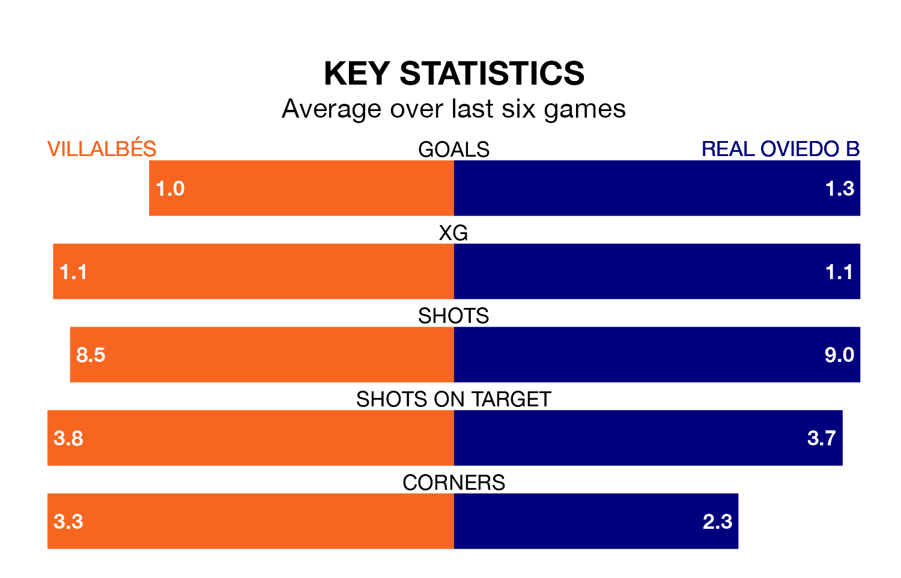

Villalbés host Real Oviedo B on Sunday at the Estadio Municipal A Magdalena in Segunda División RFEF Group 1.
In their last league match, on January 7, Villalbés drew with Pontevedra CF 1-1 at home.
Oviedo B also drew, 1-1 away at Deportivo La Coruña B.
Oviedo B are 15th in the table after 17 games, of which they have won three and drawn eight, earning 17 points.
Villalbés are six places ahead of the visitors in ninth, with six wins and six draws putting them on 24 points.
The home team are in mixed form in Segunda División RFEF Group 1, with two wins and a draw from their last six games.
With a win and four draws over that period, Oviedo B's form is similar – they have both taken seven points from 18.
With 16 goals in 17 games so far this season, Villalbés are scoring at below the league average rate with 0.9 goals per game. But they are conceding fewer than average too, letting in 16 goals at a rate of 0.9 per game.
Oviedo B are also below average scorers, with 0.9 goals per game, compared to a league average of 1.2. They have conceded 1.3 goals per game.
Updated: 11:31, 09/01/24